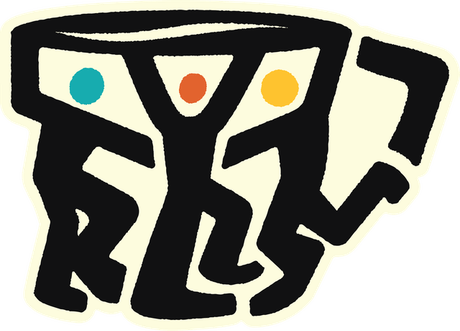

A Philippine group of companies
One movement, many brands — building 400 branches nationwide so the provinces get the same choices the metro already has.
Presented by
Broadheader IT Solutions
Who we are
RBS is a retail group first — and around that floor sits a set of partner companies covering food, coffee, services, technology, mobility and payments.
Each brand runs its own category. All of them are committed to the same target and the same standard of experience for the Filipino customer.
The shared target, across Luzon, Visayas and Mindanao.
Retail, services, food, coffee, software, mobility, payments.
Every partner company is committed to the movement.
The target
Not concentrated in one city. Spread nationwide, so the movement is felt where choice has always been thinnest.
Expansion aimed at the towns and cities outside Metro Manila.
Retail floors, food counters, cafés, kiosks and charging bays.
Every brand in a branch feeds the next one's foot traffic.
Illest · Aeropostale · Hurley
Mang Guabao · Boleros · Italyum

Ground Up CoffeeInside every branch
The ecosystem, in motion
A two-minute cinematic walk through all seven categories — retail, services, food, coffee, EV + parking, payments and IT — as one continuous world.
Why we move
For too long, the best of retail, food and technology has stopped at the edge of the metro. The RBS Movement exists to change that.
Every branch we open in a province is a promise kept — that a family in Nueva Ecija, in Iloilo, in Davao deserves the same choices, the same quality and the same experience as anyone in Manila.
We are not simply opening stores. We are widening what is available to the Filipino people.
Retail · Services · Food · Coffee · Software · EV Charging + Parking · Cash-in + Payments — all committed to the RBS Movement.
Loading the sequence